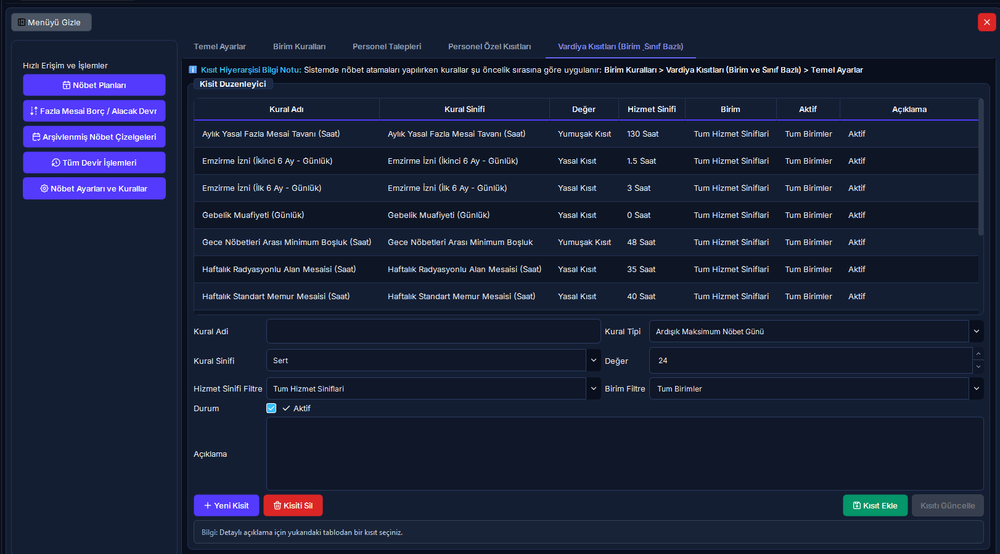

Yasal & Kurumsal Kısıtlar, Hizmet Sınıfı Kuralları ve Adalet Ağırlıkları
Kural piramidinin üst kademelerini oluşturan hizmet sınıfı (Tabip, Radyoloji Teknisyeni vb.) ve birim bazlı kısıtları, Sert (Yasal) ile Yumusak (Kurumsal) ayrımını ve nöbet dağıtım adalet sınırlarını yönetmenizi sağlar.
Kısa Reçete: Hizmet Sınıfı ve Birim Bazlı Kısıt Tanımlama
Farklı meslek gruplarının ve klinik birimlerin çalışma sınırlarının ayrıştırılması ve dağıtım motorunun sert/esnek kısıt dengesiyle çalıştırılması.
[Yasal & Kurumsal Kısıtlar] sekmesinde Kural Tipini, Sert veya Yumusak sınıfını, Hizmet Sınıfını, Birimi ve sayısal sınırı seçerek [Kısıt Ekle] butonuna basın.
Eklenen kural piramit önceliğine göre genel ayarın yerine geçer; Sert kurallar kesinlikle çiğnenmez, Yumusak kurallar ceza katsayısıyla adil biçimde dengelenir.
5N1K Kural ve Arayüz Çözümleme Tablosu
Yasal ve Kurumsal Kısıtlar sekmesindeki kural tipleri, sertlik derecesi ve kapsam filtrelerinin çalışma mantığı.
Arayüz Ekran Görünümleri

Adım Adım İşlem Rehberi
1. Hizmet Sınıfı veya Birime Özel Kural Ekleme ve Güncelleme
- Sol menüden [Nöbet Yönetimi] > [Nöbet Ayarları ve Kurallar] ekranına girip [Yasal & Kurumsal Kısıtlar] sekmesini açın ve [Yeni Kisit] butonuna tıklayın.
- Kisit Duzenleyici panelinde Kural Adını yazın; Kural Tipini (örneğin Hafta Sonu Nöbet Dengesi / Limiti), Kural Sınıfını (Sert veya Yumusak), Hizmet Sınıfını (örneğin Radyoloji Teknisyeni), varsa Birimi ve sayısal Değeri girin.
- [Aktif] kutusunun işaretli olduğunu doğrulayıp [Kısıt Ekle] butonuna basın.
- Mevcut bir kuralın sınırını değiştirmek için tablodan satırı seçip [Kısıtı Güncelle], yürürlükten kaldırmak için [Kisiti Sil] butonunu kullanın.
Sıkça Sorulan Sorular (SSS)
Hizmet sınıfı kuralı genel temel ayardan farklı olursa sistem hangisini uygular?
Kural Piramidi uyarınca Birim + Hizmet Sınıfı ve tek başına Hizmet Sınıfı kuralları Genel Temel Ayarlardan daha yüksek önceliklidir. Bu nedenle ilgili gruptaki personele bu sekmedeki özel sınır uygulanır.
"Sert" ve "Yumusak" kural sınıfları arasındaki fark nedir?
Mevcut bir kuralı silmeden geçici olarak nasıl devre dışı bırakabilirim?
Tablodan ilgili kuralı seçip [Aktif] kutusundaki işareti kaldırarak [Kısıtı Güncelle] butonuna basmanız yeterlidir; kural tanımı korunur ancak planlamada uygulanmaz.